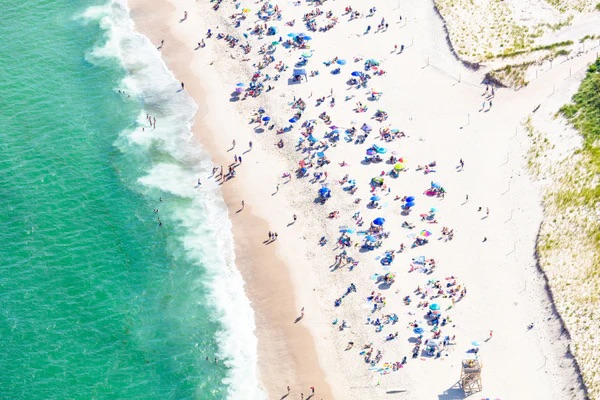

About Me
Hi! My name is Kate, and I love talking about Cape Code and its beaches. Ever since I was little, summers on the Cape have been a huge part of my life. I grew up going with my family and also live there full time during the summer, so when I find any connection to the Cape, I love talking about it. Besides going to school in Boston, Orleans, Cape Cod is my favorite place in Massachusetts and I look to go all the time, even in the dead of winter. I truly enjoy learning and exploring different parts of the Cape, and then sharing my new experiences with friends and family. What I love most about the Cape is that it’s always changing, yet it somehow stays the same, keeping its sense of nostalgia. There’s always new shops, restaurants, or secret pathways you discover, and every summer you’ll find something new. Orleans is mid-to-upper cape, so it is central to popular beaches and shopping towns that are close by. The picture below is Nauset Beach in Orleans, which is my favorite part of town that I walk to daily. Overall this website will showcase my favorite beaches and places I would recommend visiting in my hometown!
